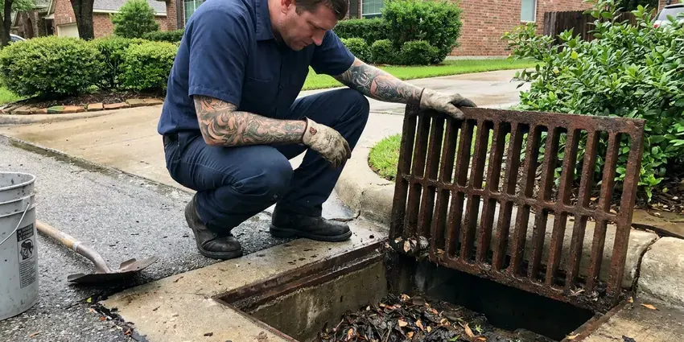

Plumbing Inspection in Fredericksburg, VA
Buying a home or chasing a high water bill in Fredericksburg, VA? Our plumbers inspect supply lines, drains, sewer and water heaters in one trip.
- Same-Day Inspection Appointments
- Flat Pricing
- Licensed, Experienced Plumbers
- Fast Scheduling
Schedule a Detailed Plumbing Inspection in Fredericksburg, VA
You get photos and a written report, plus sewer video when included.
Detailed Plumbing Inspection With Camera Video in Fredericksburg, VA
FBN Plumbing looks at the conditions that cause the most plumbing trouble around here. Soils in Virginia range from sandy ground with a high water table near the coast to dense clay and rocky karst farther inland. Even moderate hardness in Fredericksburg can leave scale in water heaters over time, so regular flushing helps them run longer and more efficiently. Our inspections focus on catching the slow problems, like a creeping slab leak or a sewer line sagging into a belly, before they turn into flooring or foundation damage. Small finds stay small.
Some of what we do:
- Static pressure and PRV checks
- Gas connector and shutoff checks
- Sewer camera inspections with recorded video and line location

Additional Plumbing Maintenance Services in Fredericksburg, VA
Our maintenance and specialty plumbing services in Fredericksburg, VA catch small problems before they become emergencies.


Customers
Why Choose FBN Plumbing for Plumbing Inspection in Fredericksburg, VA?
Our reports include photos, video and estimated repair ranges. That makes negotiating a purchase or budgeting for upgrades much easier.
- Early Detection, Catch small leaks or corrosion while repairs are still cheap.
- Camera Proof, We record sewer video so you can see roots, bellies or breaks yourself.
- Prevent Damage, Hidden leaks show up before they soak floors and walls.
Citywide Coverage
Inspection service covers Fredericksburg and the surrounding communities. We spend more time on older houses. Older areas tend to have cast iron, clay and galvanized, and newer homes lean toward PEX, PVC and tankless, so the checklist adjusts.
Experienced Team
Licensed and insured plumbers handle every inspection we do. Experience shapes the report. Reports from a plumber who repairs this work every week tend to be clearer and more useful, because the findings come with a sense of what each repair actually takes.
Safety-First Approach
Safety items come first in every inspection. Gas and vents get a close look. We check connectors, vents, relief valves and expansion tanks, since those failures can injure people, not just damage property.
Trusted Certified Fredericksburg Plumbing Services Professionals
At FBN Plumbing, we are proud to offer certified plumbing services throughout Fredericksburg, VA. Credentials matter in this trade. Every repair, install and maintenance visit follows strict safety and quality rules, and the plumbers doing the work carry recognized industry credentials.
Call Us Now PHCC Plumbing Contractor Recognition
PHCC Plumbing Contractor Recognition Better Business Bureau (BBB) Accreditation
Better Business Bureau (BBB) Accreditation Angi Certified Pro
Angi Certified Pro ISO 9001 Quality Management Certification
ISO 9001 Quality Management CertificationPlumbing Inspection Work in Fredericksburg, VA
Commercial Property Plumbing Checks in Fredericksburg
Businesses in Fredericksburg use our inspections to plan maintenance instead of reacting to breakdowns. We look at backflow assemblies, water heaters, restroom flush valves, floor drains and trap primers and the building sewer. Closures are expensive. A written report with ranked priorities lets you schedule the repairs after hours or on a weekend instead of closing during business hours.

Pre-Purchase Plumbing Inspections in Fredericksburg
A house can pass a general inspection and still have a sewer full of roots. Buyers use our inspection to learn the pipe type, the sewer condition and the heater's age before the option period ends. Findings help with negotiations. Old galvanized, a damaged sewer or an aging heater can all become a repair request or a closing credit.
Pre-Purchase Plumbing Report in Fredericksburg
Before buying a home in Fredericksburg, a plumber's inspection can keep you from inheriting a sewer replacement. Our report lists every finding with a photo, a plain description and a repair range, so your agent can use it in negotiations right away. Most buyers get it the same day. It fits tight closing schedules.
Water Heater Inspections in Fredericksburg
Water heaters give clues long before they fail. The serial number tells us the age, and we check for rust, look at the vent and test the relief valve. Tankless units get checked for scale. Gas heaters get a look at the flame, the drip leg and the vent draft, since a poorly venting heater is a safety issue.
Hard Water Damage Assessment in Fredericksburg
Even moderate hardness in Fredericksburg can leave scale in water heaters over time, so regular flushing helps them run longer and more efficiently. Hard water leaves scale in pipes, fixtures and water heaters. Signs include crusted aerators, clogged showerheads, slow toilet fill and heater sediment, and we can test hardness during the visit. Then we explain your options. Softeners, filters and scale reducers all help, and we suggest the one that matches the reading we took.
Water Heater Safety Inspection in Fredericksburg
A water heater stores a lot of hot water under pressure, so safety items matter. We test the T and P valve, confirm its discharge line runs to a safe place, look for an expansion tank where one is needed and check the drain pan. Gas units get a CO check. A heater that backdrafts can spill combustion gases into the house, so we test the draft at the vent hood and note any problems right away.
Whole-Home Plumbing Inspections in Fredericksburg
Our whole-home inspections focus on the problems we see most in Virginia houses. Common finds include old pipe, stiff shutoffs, tired heaters, slow drains and rooty or sagging sewers. Each gets tested, not guessed at. A corroded fitting or partial blockage found now will not become a ceiling stain or a holiday backup later.

Sewer Camera Inspection in Fredericksburg, VA
Many older homes have clay, cast iron or Orangeburg sewer lines that can crack, sag or fill with roots. The camera starts at a cleanout. Every offset, belly, root intrusion and break shows up with its depth and location, and the recording is yours to keep.
Plumbing Inspection Near Me in Fredericksburg, VA
A local plumber can usually fit an inspection in within a day or two. That matters on a deadline. Our crews work in this area every day, so we can often meet your inspector, your agent or your schedule without pushing the appointment into next week.
Local plumbers know which problems show up most in Fredericksburg homes. Soil, trees and water all play a part. We know which neighborhoods tend to have clay sewers with roots, which ones were built with polybutylene and where pressure runs high enough to need a reducing valve.
FBN Plumbing at a Glance
- Licensed and insured plumbers serving Fredericksburg, VA
- Same-day appointments and 24/7 emergency response
- Clear written estimates, no hidden fees
- 4.9-star rated by 798+ Virginia customers
Fredericksburg Map
Fredericksburg Information
- Population
- 28,928
- Area codes
- 540/804/703
- Service area
- Fredericksburg and towns within a 40 mile drive
- Nearby
- Dale City, Centreville, Alexandria, Arlington
Older supply pipe, aging sewer lines and scale inside fixtures make a plumber's inspection worth the hour or two it takes in Fredericksburg, VA.
Expert Services
Call FBN Plumbing for reliable plumbing work done by licensed pros in Fredericksburg, VA.
Our Specialized Plumbing Services in Fredericksburg, VA
At FBN Plumbing, we handle the full list of plumbing services across Fredericksburg, VA. We go from leak detection all the way to full system installations, for homes and commercial buildings, and we do it quickly at a fair price. Here are the core services we offer:


How a Plumbing Inspection Works in Fredericksburg, VA
Here is how we inspect your plumbing and deliver a report you can act on.
Book the Inspection
Call (434) 230-6997 or use the form to schedule. We confirm the address, size and deadline and give you a price.
Inspect the System
A licensed plumber tests fixtures, pressure, the heater and the sewer line using cameras and gauges.
Get the Report
You get a written report with photos, priorities and repair ranges for anything that needs work.
Frequently Asked Questions About Plumbing Inspection in Fredericksburg
Standard plumbing inspections typically run $150 to $300. With the sewer camera, most totals land between $250 and $500.
We can include estimated repair ranges in the report and firm quotes if you want us to do the work. You are never required to hire us.
Often, yes. Several tests work together. Pressure tests, moisture meters, thermal imaging and a careful look for water stains all help uncover leaks that are not obvious, and finding them early keeps the repair small and the damage limited.
A standard home inspection takes about one and a half to three hours. Camera work takes longer. Big houses, long sewers or a leak that needs tracking can stretch it, and we give you a time estimate when you schedule.
Looking for drips and watching the meter is worth doing on your own. It has limits. A professional inspection uses cameras, pressure gauges and leak detection tools to check the parts you cannot see, including the sewer line and the pipe inside walls, which is where the expensive problems usually hide.
Most residential inspections in Fredericksburg take one to two hours. Age and size matter. The exact time depends on how big the house is, how old the plumbing is and whether we find something that needs extra tracing, such as a hidden leak or a sewer defect.
Our full inspection covers supply pipe, drains, fixtures, shutoff valves, the water heater, gas connectors and the sewer line. Pressure gets measured. We also run a meter leak test, look for signs of slab leaks and hard water damage and check any softener or filter system tied into the plumbing.
It is smart before buying any home, especially one over 25 years old or with large trees. Backups and gurgling drains also call for one.
Hear From Customers Who Hired Our Plumbing Experts

Paul B.
Our pit pump ran nonstop even in dry weather. The plumber found the check valve was stuck open, so the same water kept cycling back into the pit. New valve, new float switch, done in an hour. It runs quiet now.
Sump Pump · Alexandria, VA
Marcus H.
Grease from the fryer line kept clogging the kitchen drain at my diner. FBN Plumbing hydro jetted the line after closing, showed me the buildup on camera, and set us up on a quarterly cleaning so it does not catch us on a Friday again.
Drain Cleaning · Dale City, VA
Tyler J.
We bought a taller comfort height toilet for my dad, who just had knee surgery. The plumber pulled the old one, found the flange was cracked, and replaced it before setting the new bowl. Took about two hours.
Toilet Installation · Fredericksburg, VA
Laura S.
Our 40 gallon tank started leaking from the bottom after thirteen years. The tech hauled the old one out, set a new unit with a fresh expansion tank, and had hot water running in about four hours. He took the old tank with him too.
Water Heater Replacement · Centreville, VA
Angela D.
Our sump pump quit during a storm and the water was an inch from the basement carpet. FBN Plumbing put in a new pump with a battery backup that same evening. We have had two heavy rains since. It kicked on both times.
Sump Pump · Fredericksburg, VABrian W.
I smelled gas behind the dryer and called right away. The plumber found a corroded flex connector, replaced it, and pressure tested the whole line before turning the gas back on. He let me watch the gauge hold steady for fifteen minutes.
Gas Line Repair · McLean, VA